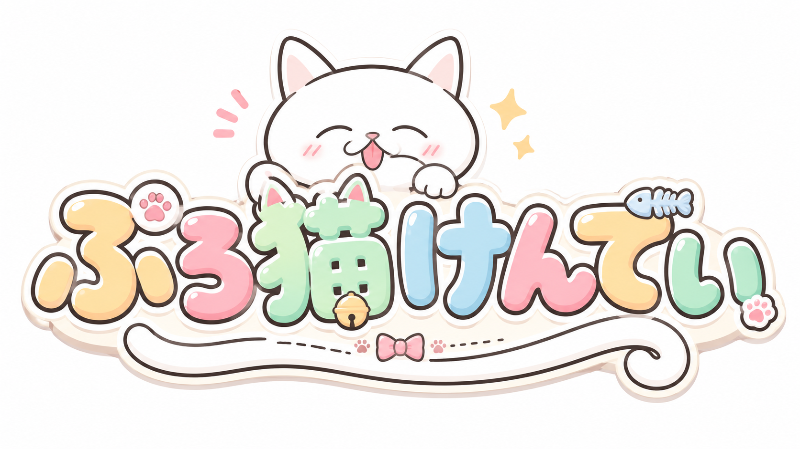
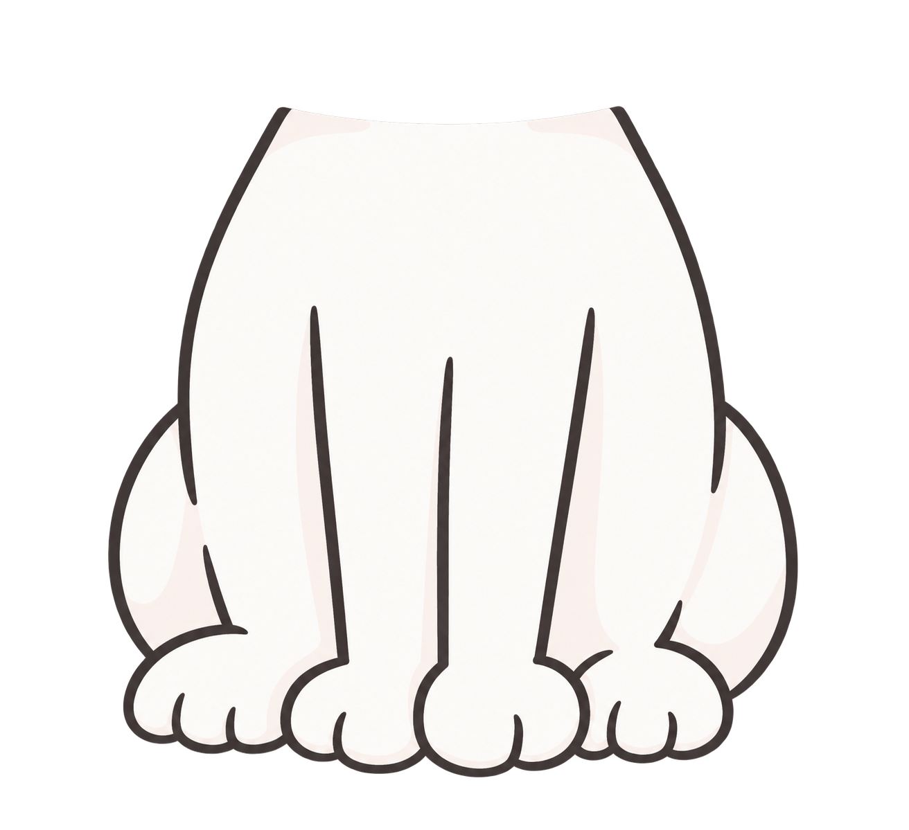
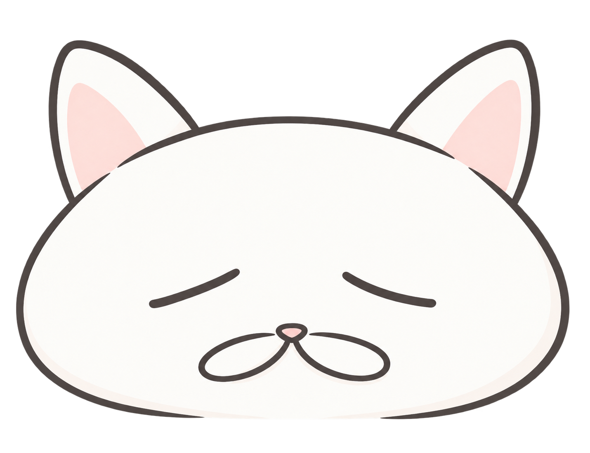
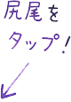
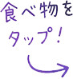

猫に食べさせていい？いけない？
あなたの猫知識をけんてい！
難易度をえらんでスタート
🍚 食べていい物 → 食べ物をタップ
⚡ あぶない物 → 尻尾をタップでバチコーン！
SCORE
0
COMBO
×0
LIFE
❤❤❤




ぷろ猫けんてい 結果
認定
－
🐾
| 正答率 | -% |
|---|---|
| 最高COMBO | - |
| 危険食品回避 | - |
| SCORE | - |